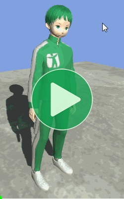
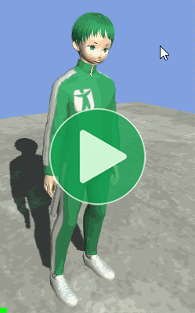
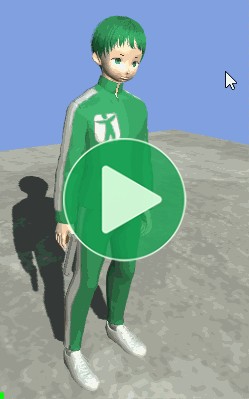
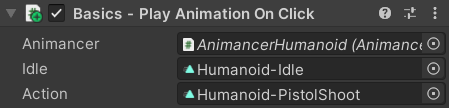
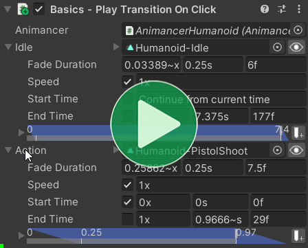
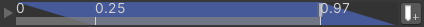

Location: Samples/01 Basics/04 Transitions
Recommended After: Basic Action
Learning Outcomes: in this sample you will learn:
How to use Transitions.
How to smoothly blend between animations.
How to set up animation details like speed and fade duration in the Inspector.
Summary
This sample demonstrates how to smoothly blend between animations instead of instantly snapping. This is known as Cross Fading.
- You can smoothly blend between animations by specifying how long you want it to take as the second parameter in the
Playmethod. - If you want the animation to start from the beginning, pass in
FadeMode.FromStartas the third parameter. - You can use Transitions to define animation details like the fade duration and speed in the Inspector.
- When using Events with Transitions, you should configure the events on startup instead of adding them to the
AnimancerStateafter you play an animation.
Overview
The code structure initially looks the same as the Basic Action sample, but when we introduce Transitions the direct references to AnimationClips get replaced by ClipTransitions which each contain a reference to an AnimationClip along with various other details:
{kind=link}
Cross Fading
The character in the Basic Action sample is playing the animations we want, but changing between them instantly snaps the character's pose instead of moving smoothly from the previous pose. This can be easily solved by Cross Fading between the animations.
| Play Immediately | Cross Fade |
|---|---|
|  |  |
To start a fade, all you need to do is specify how long you want it to take using the optional second parameter in the Play method:
_Animancer.Play(_Action);// Play instantly.
_Animancer.Play(_Action, 0.25f);// Cross Fade over 0.25 seconds.
Note that Animancer Lite only allows a fade duration of 0.25 seconds. You can try out any duration you want in the Unity Editor, but it will always use the default duration in runtime builds unless you purchase Animancer Pro.
The full script now looks like this:
using Animancer;
using UnityEngine;
public class PlayTransitionOnClick : MonoBehaviour
{
[SerializeField] private AnimancerComponent _Animancer;
[SerializeField] private AnimationClip _Idle;
[SerializeField] private AnimationClip _Action;
protected virtual void OnEnable()
{
_Animancer.Play(_Idle, 0.25f);
}
protected virtual void Update()
{
if (SampleInput.LeftMouseUp)
{
AnimancerState state = _Animancer.Play(_Action, 0.25f);
state.Time = 0;
state.Events(this).OnEnd ??= OnEnable;
}
}
}
Note how the OnEnable method includes a fade duration because we're using it as the End Event or the _Action animation. When Unity first calls it on startup, nothing else is playing yet so Animancer will ignore the fade duration and simply play the _Idle animation immediately, but then when the _Action ends it will fade as intended.
Fading from a generic Idle pose into shooting a pistol is rather silly because the actual shot and recoil motion occurs during the fade, but the point of this sample is just to show what can be done and how to do it.
Rapid Fire
state.Time = 0 |
FadeMode.FromStart |
|---|---|
Specifying a fade duration gives nice smooth blending between two different animations, but doesn't automatically allow an animation to blend into itself because each state can only have one Time value and setting it will immediately snap it to the new value. |
This is solved by Fade Modes which can be specified as the optional third parameter of the Play method. In this case, we want to use FadeMode.FromStart so that it will always fade in from the start of the animation even if it was already in progress. |
|
|
|  |
The full script now looks like this:
using Animancer;
using UnityEngine;
public class PlayTransitionOnClick : MonoBehaviour
{
[SerializeField] private AnimancerComponent _Animancer;
[SerializeField] private AnimationClip _Idle;
[SerializeField] private AnimationClip _Action;
protected virtual void OnEnable()
{
_Animancer.Play(_Idle, 0.25f);
}
protected virtual void Update()
{
if (SampleInput.LeftMouseUp)
{
AnimancerState state = _Animancer.Play(_Action, 0.25f, FadeMode.FromStart);
state.Events(this).OnEnd ??= OnEnable;
}
}
}
Workflow Problem
We now have the behaviour we want, but there's a slight problem with the development workflow. Specifying the fade duration in code like this makes it clear exactly what the code is doing, but also has several disadvantages:
- You can't easily preview the fade. If you want to see what it will look like you have to enter Play Mode and get to a point where that code is actually executed.
- Non-programmers can't easily modify the fade duration and even programmers still have to go through a tedious process of finding the right line of code, picking a new value that might be better, recompiling, and going into Play Mode to test it again.
Adding a Serialized Field to specify the fade duration in the Inspector would help a bit, but Animancer's Transitions are usually a much better solution.
Transitions
Instead of having an AnimationClip field to directly reference an animation, you can make a ClipTransition field which contains an AnimationClip as well as various other details about how you want it to be played such as a Fade Duration and Start Time.
| Animation Clips (Old) | Clip Transitions (New) |
|---|---|
|
|
|  |  |
We won't be using it here, but the eye icon on the right side of the Inspector for each transition field allows you to Preview it in Edit Mode so you can see what it looks like while tweaking the values.
The Transitions page explains what all the fields do, but in this sample we're only interested in two of them:
Fade Duration
We're still using the same fade duration of 0.25 seconds on both the Idle and Action animations, but you can see that same value being displayed in other units as well. The Time Fields section explains how they work.
Start Time
Each transition's Start Time automatically determines the FadeMode it will use:
| Transition | Start Time | Fade Mode | Meaning |
|---|---|---|---|
Idle |
Disabled | FixedSpeed |
Don't set the time, keep playing from the current time. |
Action |
0 |
FromStart |
Set the time to this value as described in the Rapid Fire section. |
Events in Transitions
Each transition has a small timeline diagram down the bottom of its Inspector which draws its Fade Duration, End Time, and also allows you to configure its Animancer Events. The Events Samples demonstrate how to use them in detail, but they're relevant here because transitions can store their own events just like states.
This means that after we replace the AnimationClip fields with ClipTransitions we have a few other changes to make as well.
| Animation Clips (Old) | Clip Transitions (New) |
|---|---|
Previously, all we did on startup was play the _Idle animation. |
Now, we add the End Event to the _Action transition on startup instead of to its state when playing it. |
|
|
When we played the AnimationClip, we needed to specify its fade duration, fade mode, and end event. |
When we play the ClipTransition, we've already set up everything else we need. |
|
|
Conclusion
The full script now looks like this:
using Animancer;
using UnityEngine;
public class PlayTransitionOnClick : MonoBehaviour
{
[SerializeField] private AnimancerComponent _Animancer;
[SerializeField] private ClipTransition _Idle;
[SerializeField] private ClipTransition _Action;
protected virtual void Awake()
{
_Action.Events.OnEnd = OnEnable;
}
protected virtual void OnEnable()
{
_Animancer.Play(_Idle);
}
protected virtual void Update()
{
if (SampleInput.LeftMouseUp)
{
_Animancer.Play(_Action);
}
}
}
In the end, the script using AnimationClips was slightly shorter, but the one using ClipTransitions has a much better development workflow because it keeps purely visual details like the fade duration out of the code for easier customization.
What Next?
| Sample | Topic |
|---|---|
| Basic Character | Combining this sample with Basic Movement and dealing with some of the issues you might run into as you start implementing more complex behaviours. |